Civil engineer · sixteen years in construction
Construction Manager · Site Manager · civil works
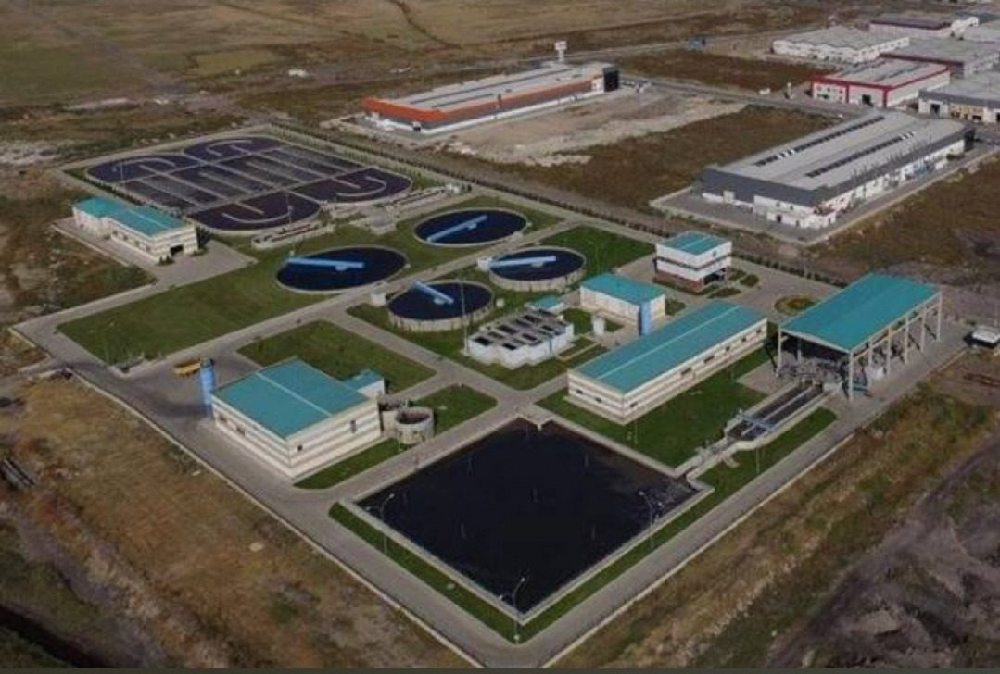
I go by Alper. I'm a civil engineer, and I've spent most of my working life running sites: a technical school, a wastewater treatment plant, a police training complex, a dining hall inside a military base, an office floor in a tower that stayed occupied while we worked. Along the way I also designed a concrete protective cabin and took it to fairs abroad.
My CV lists all of that in two pages. This page is longer and less tidy. It's how the work actually went, roughly in the order it happened, and a little about our family and why we're moving north.
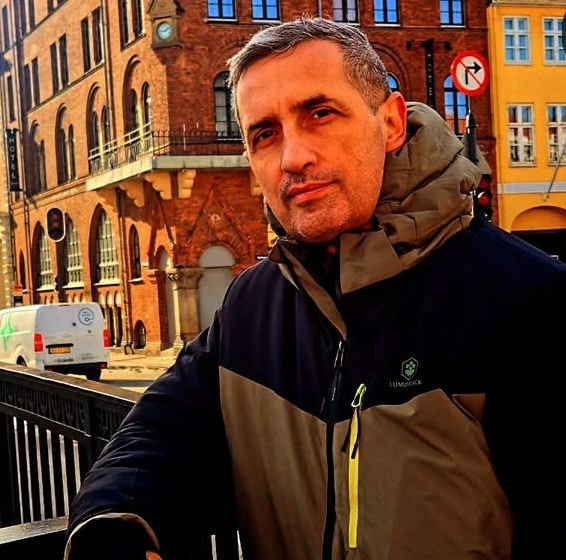
My first site was abroad, in Kyiv, in the summer of 2006. I was a young engineer on the InterContinental hotel, a five-star building going up in the middle of the city. I worked on the reinforced concrete from the basement at −11 m upwards, and I also handled progress payments and quantities.
It was an international site, and English was the language we worked in every day. Even so, I thought anyone running a site should speak the local language, so after work I went to a language school in the city to learn Russian. Towards the end of that summer my family at home was going through a difficult time, and I decided to go back. The hotel opened later and is still running. Since the war I often wonder how the people I worked with are.
Back in Türkiye I ran a refurbishment in Ankara, did my military service, and then spent a summer on the restoration of the State Art and Sculpture Museum and the former Parliament building. After that came a few months of structural and design work, on a shooting range, a villa and a steel façade, and in 2008 I moved to Kayseri as site manager for 13 retail stores and a 13-storey residential building.
In Kayseri I joined BETAŞ, and my first job for them was a technical school for the Turkish Textile Foundation, 14,752 m². It was designed as a working teaching factory. Cotton comes into raw material stores on the lower floor and is spun into yarn and sewn into finished garments, and the laboratories and classrooms look down onto the workshop floor. Rainwater is collected, filtered and reused on site.
The site was mine from the foundations to handover: massive reinforced concrete walls, long-span waffle slabs and a 42 m clear-span steel roof, with the shell and the finishes running together.
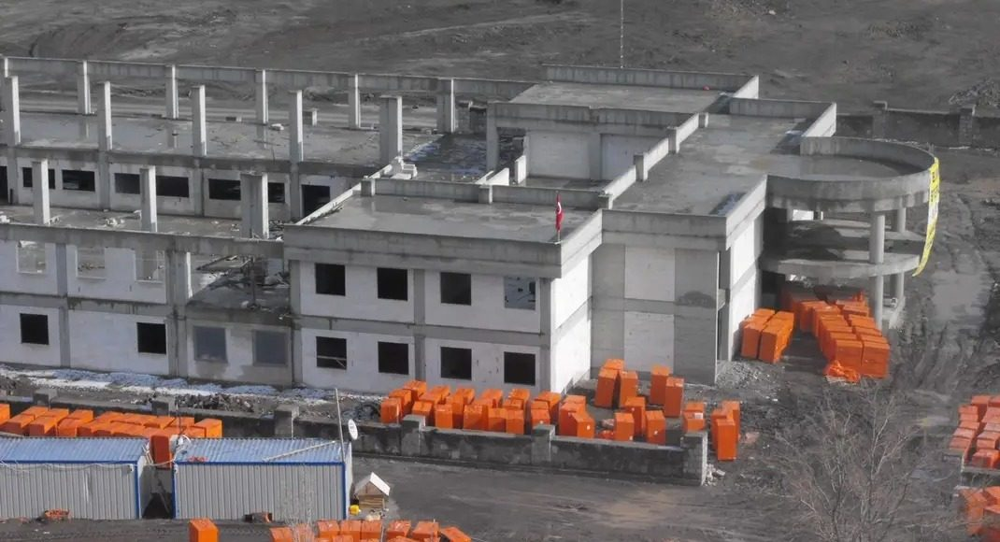
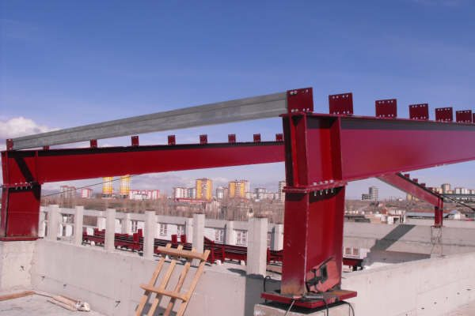
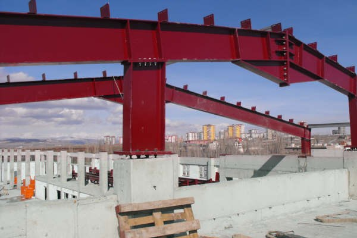
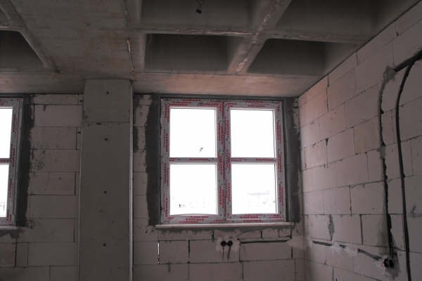
Not everything went right. A beam was cast where the formwork drawing showed none, and we had to break it out and rebuild it. The drawing was correct, but the latest information hadn't reached the crew doing the pour.
We handed the school over in September 2009. It's still in use, and today it carries the name of the textile employers' union.
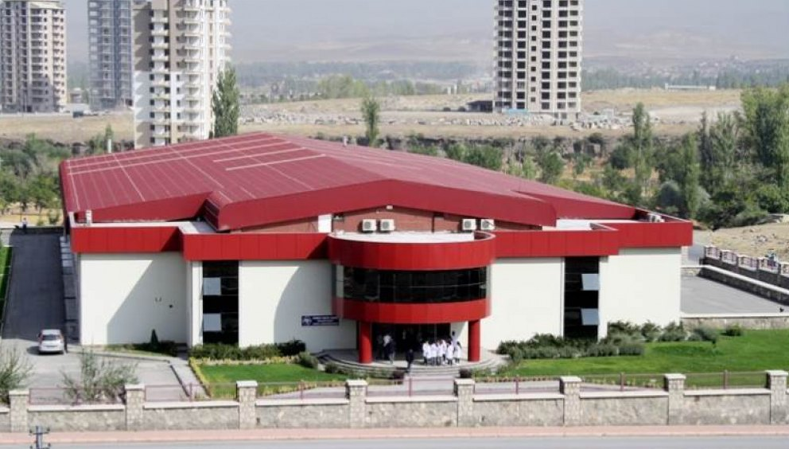
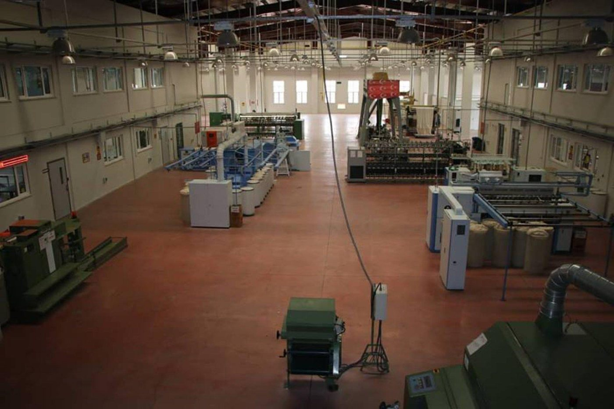
For a short while after that I sat on the other side of the table, as the client's control engineer on a new annex for another vocational school. I inspected the works and advised the subcontractor on the sequence and how long each stage should take.
The Kayseri wastewater treatment plant had waited a year for its design to be reviewed and renewed before construction could start. The school was what I built for the same contractor in the meantime. When the plant was ready to go, I went back to BETAŞ as its site manager.
It treats 120,000 m³ of domestic and industrial wastewater a day, on a 100,000 m² site. I ran all the civil works, with the full site team and every subcontractor, from the start of construction to handover, and the plant went into operation on time.
The plant was built on peat, and the excavations were deep. We held the sides with steel sheet piles, 11 to 20 m long, with temporary works throughout.
One day we had to cast a blinding slab, but the excavation was full of water and the concrete pump was already on site. Sending it back would have cost us the day. We poured under water by tremie, and I set the level from the pump's flow rate. It finished 1 cm off design level, and we handed it over the next morning.
With a water tank, it eventually comes down to one question: does it hold water or not?
Where one pour meets the next, there is a waterstop in the concrete. Half of it goes into the first pour and the other half into the next, stopping water from finding its way through the joint. Once the next pour is done, you never see it again. On the tank bases, we installed it with the reinforcement before the concrete arrived.
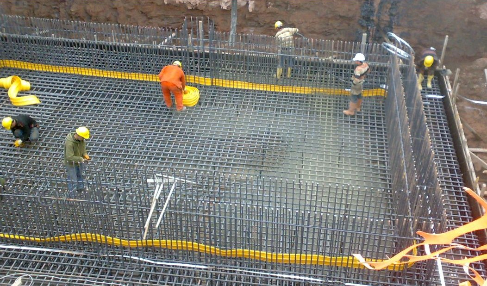
But even with all that in place, you don't really know until you put water in the tank. Once we filled the aeration tank, we found a few leaks. We worked through them one by one until there was nothing left to fix. In the end, the tanks held water, passed the test and the plant was handed over.
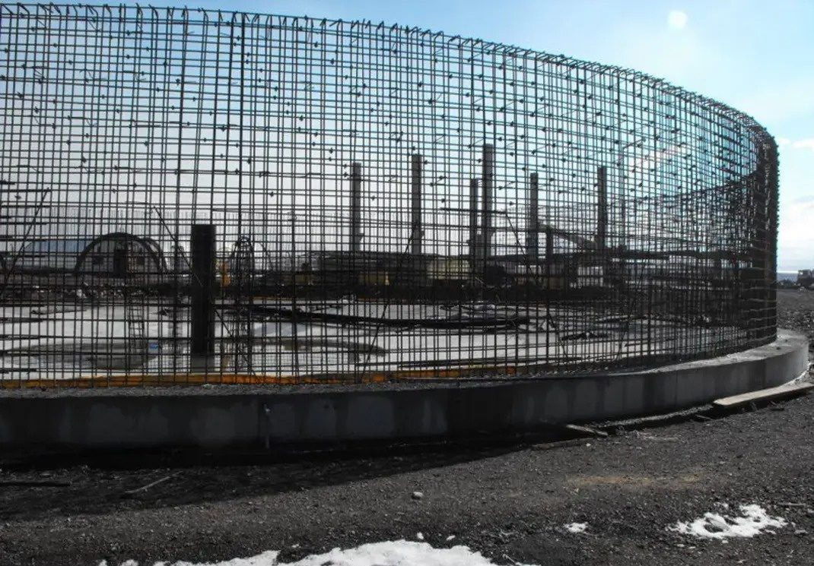
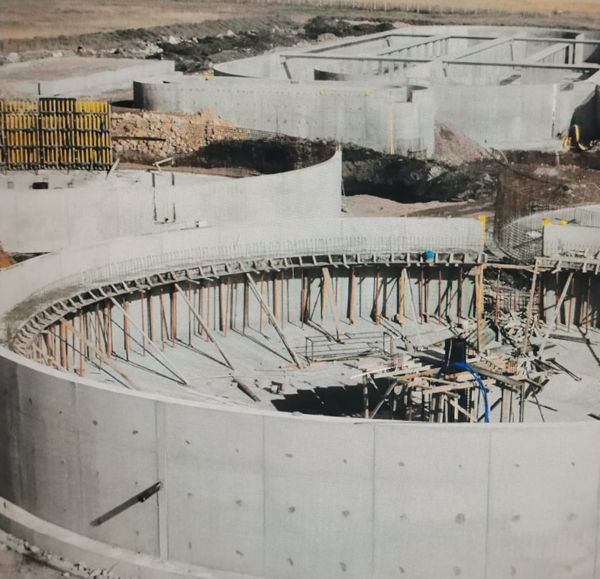
The civil works went on around everybody else's equipment. The mechanical and electrical contractors were on site with us, and a lot of my day went on keeping the crews out of each other's way: which slab needed an opening before the pour, where the lighting column foundations had to go. I asked the architect for the details we were missing, passed the structural revisions for the transformer buildings to the client's control engineers, and checked the electrical contractor's lighting plan against the column positions before we approved it.
Every evening I wrote and signed a daily report: who was on site, which subcontractors, what had arrived, what had been done, and the next day's plan for every crew. That way each foreman knew in the morning where his crew was going and who else would be working there.
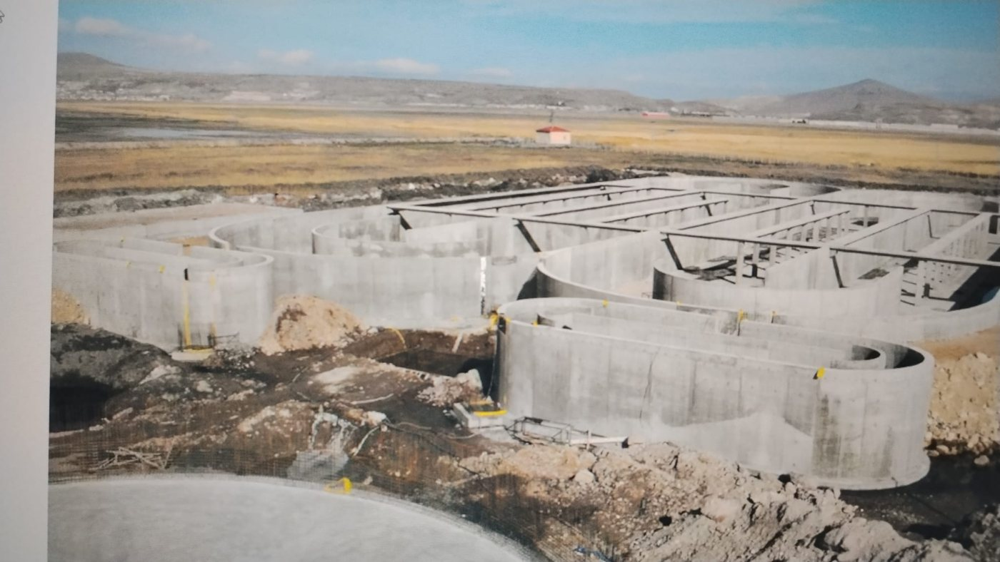
The architect drew the entrance and gatehouse building. When the client wanted changes, I built a 3D model of it in SketchUp, and we agreed the changes on the model before anything was built.
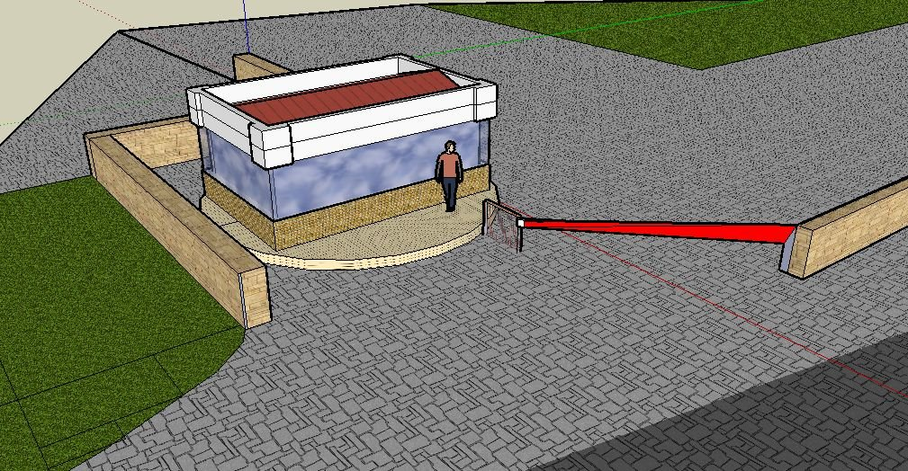
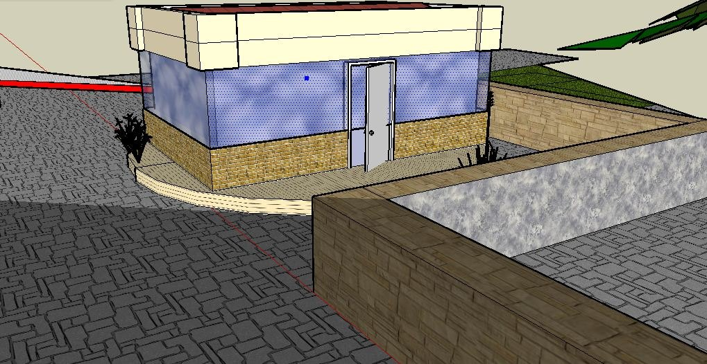
I check workmanship against the drawings, and when it's wrong it goes back. Set-out and levels were checked before each stage, so an error didn't carry into the next one. On the plant that included the steel roof trusses, with the purlins in the wrong place and the verticals the wrong way round.
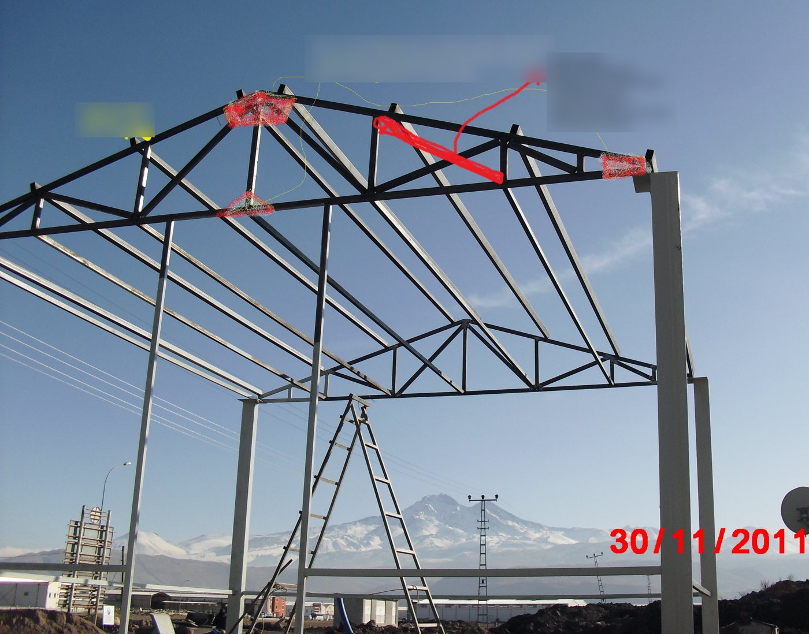
The plant wasn't the only thing on my desk. For the same company I prepared the quantities and the cost estimate for its winning bid on the Central Bank of Iraq's international tender, and I was the supplier's engineer on a job at the Çimsa cement plant, preparing the valuations. When the client pointed out that one invoiced item was already in the unit rate for the steelwork, I checked it with our accounts, took it out and reissued the valuation in their new format. I didn't want to make a material error.
I also supervised three engineering interns through their site placements on the plant.
In 2011 my wife, who works in the public service, was posted to Şırnak, in the far southeast of Türkiye. I waited for the plant's handover and then joined her. For the next year and a half I gave my time to the provincial police as their engineer, unpaid. I ran the construction of blast walls, retaining walls, fortified outposts and two-storey buildings, designed a rocket-resistant guard booth, and did the technical acceptance of staff housing on their behalf.
Several of my sites had a gate where every delivery and every worker was checked. The first was a 3,000-person dining hall inside a military base. I designed the refurbishment in 3D and ran the site: new heating, cooling and ventilation, plumbing, floors and partitions, with the dining hall out of service while we worked. It reopened as planned.
Then came the police special operations training complex near Ankara, a 140,000 m² construction area: eight shooting ranges from 25 m to 400 m, a 500 m² ballistic-glazed live-fire building and an operations village of eleven buildings. I planned the sequence before we started so the fronts could run in parallel, and ran the daily briefings with the foremen and the weekly meetings with the client and the consultant. The whole site ran under police security control and public procurement audit, and we handed it over on time. For security reasons, I don't show photos of it.
One of our subcontractors had a habit of sending material requests around five in the afternoon for work planned for the next morning. Five o'clock is a bit late to tell someone what you need at eight. By then, there was usually just enough time to make a few phone calls, find out what was missing and hope everything would somehow be ready in the morning.
So we changed one thing: material requests had to come earlier in the day, and I put it in writing. That gave us time to check the list, arrange the materials and sort out anything missing while suppliers were still answering their phones. The work itself didn't change. The next morning simply became a little less interesting.
The roofing subcontractor didn't start when planned, and five trades stopped behind it: screed, tiling, kerbs, the façade and the rainwater gutters. The insulation already on the walls was at risk from the rain. I listed what was waiting, item by item, and together with my manager we warned the subcontractor in writing. In the meantime I moved the crew that was waiting onto painting the steel frames of the range canopies, so they weren't standing idle.
At handover, the client went through the work one document at a time. They asked for an approval form for every material we had used, from façade paints and glazing to aluminium shutters and roofing, each with its technical data sheets and certificates, and a ten-year warranty for the roof membrane signed by the manufacturer.
Then there was one final request: around 300 days of daily site reports, handwritten, in the client's own format. I'd kept a daily report from the first day, so the information was already there. I went through my records in order and copied each day into their format until the whole project was covered. The reports went in with the rest of the documentation, and the handover was accepted.
On more than one of my sites, subcontractor labour and payment claims started building up. Left alone, they turn into disputes and slow the work down. I took the claims to the company owners myself and stayed on each one until it was closed. On those jobs the work did not stop over money.
After the police complex I stayed with the same company, and the work split in two. On the construction side, I fully redesigned and fitted out 1,200 m² of BMC's offices on the 20th floor of an office tower in Ankara in 2016: raised floors, partitions, finishes and electrical systems, while the other tenants kept working around us. We finished on time, and BMC later invited me to bid for its new factory.
On the other side, from October 2016, I designed a product. BETONKALE is a modular protective cabin cast in a single pour of C70 concrete in steel moulds, rated BR7 under EN 1063, in three sizes that can be stacked or placed side by side. I modelled the interior layouts for each use in 3D and put together the catalogue. I also co-developed a rail-mounted moving target system with 1,200 m wireless control that measures a shooter's reaction time.
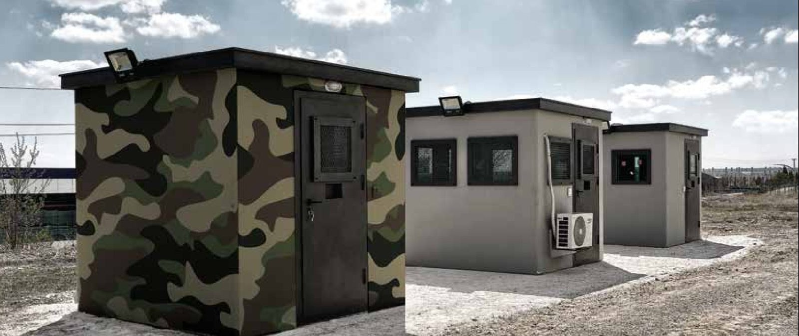
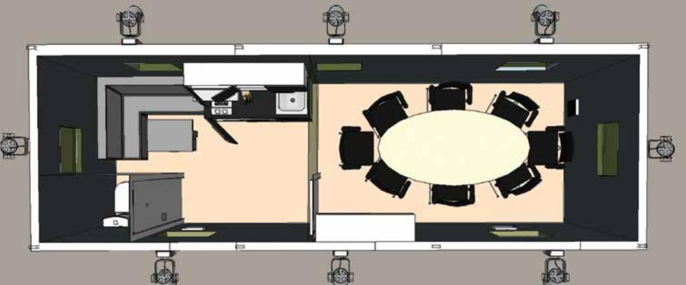
In 2018 I took both products to five international defence fairs: Riyadh, Nuremberg, Amman, Astana and Baku. For the company's licensed facility I was also the registered facility security manager.
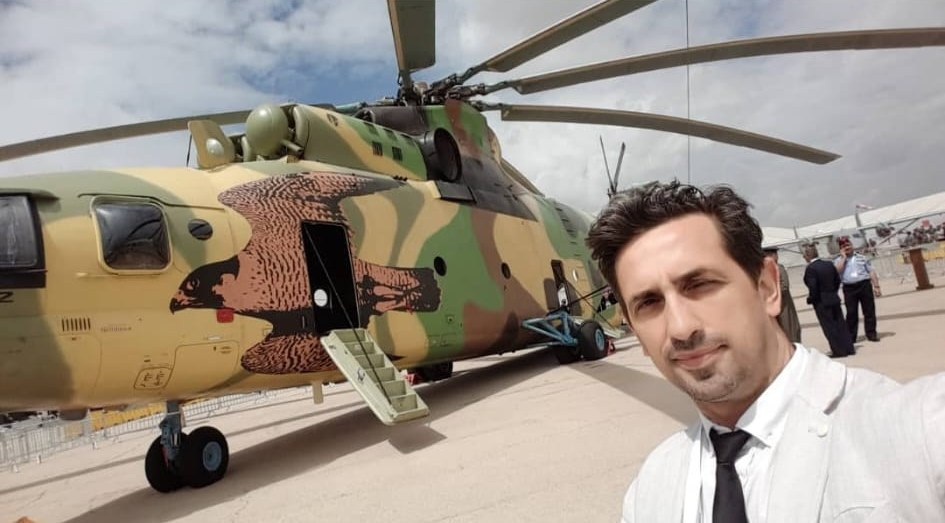
In June 2020 my wife was posted to Tekirdağ, and I moved with the family. I stepped back from full-time site management then, and kept taking freelance site and pre-design work for local contractors, modelling their projects in SketchUp and advising them on running the site.
In February 2022 I delivered a turnkey office conversion for the Istanbul municipality's landscaping company: about 400 m² on the ground floor of their head office, with core drilling, steel stud partitions, heating and cooling, electrical and data cabling and finishes, in about four weeks.
Since 2025 I've been getting ready to go back: expert witness training, project management courses, and learning Danish. In February 2026 I went to a breakfast event at Rambøll in Copenhagen, part of A State of Denmark's Talent to a Green Denmark programme, and I took my family with me. My wife and son fell in love with the city. Now it's my family's turn to move for me, and I want a site of my own again.
I've never worked on a data centre or a pharmaceutical facility. The civil, structural and architectural side is the part I know: foundations, concrete and steel, the buildings, and the subcontractors who build them. On the treatment plant I coordinated the mechanical and electrical work, but I didn't design or commission it.
I don't speak Danish or Swedish yet. I work in English; on my first site, in Kyiv, English was the working language. Most of what I know I learned on the job, and I expect to close these gaps the same way.
We've decided, as a family, to settle in Denmark, and I'm looking for site work I can stay in for a long time. I'm not attached to one city. A site in a small town, or moving between sites, is fine with me. I'm also open to good opportunities elsewhere in the Nordics and the Netherlands.
I'm a Turkish citizen, so I'll need a work permit. Construction manager is on Denmark's Positive List. My start date is flexible, and I can travel for an interview at short notice.
We're a family of three. My wife works in the public service, and when we move she'll leave her job to come with me, so this is a decision we've made together and for the long term. Twice before, I moved for her postings. Our son is eleven. He's a licensed competitive swimmer, and in the evenings he and I have been learning to code together.
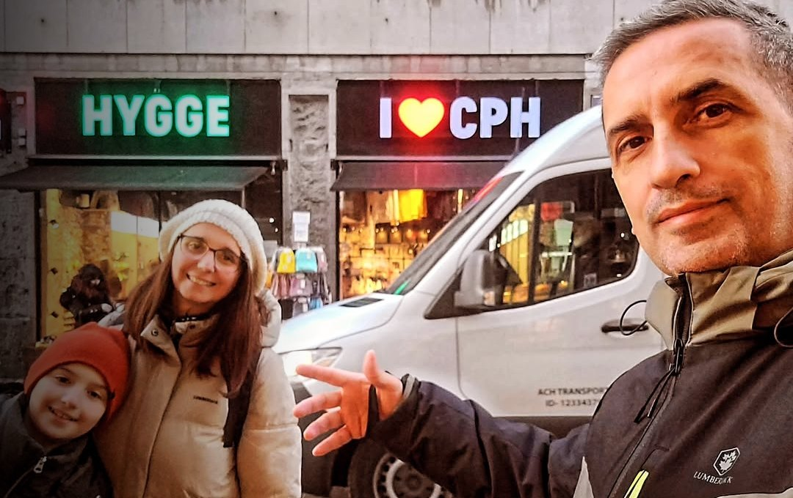
I like drawing, I play the guitar, and I like reading about people and how societies came to be: books like Yuval Noah Harari's, Jared Diamond's Guns, Germs, and Steel and James C. Davis's The Human Story. At the moment I'm reading Nicholas P. Money's The Selfish Ape. I train with weights regularly and look after what I eat. And I still enjoy a good PlayStation or PC game.
Since 2020 I've also given site and pre-design advice and mentoring to local contractors.
BSc Civil Engineering, Balıkesir University · Occupational Safety Specialist (Class C) · Expert Witness Basic Training (2025) · PMI Kickoff, Predictive and Agile (2026)
English, fluent · Russian, basic · Danish, currently learning · MS Project, AutoCAD, SketchUp